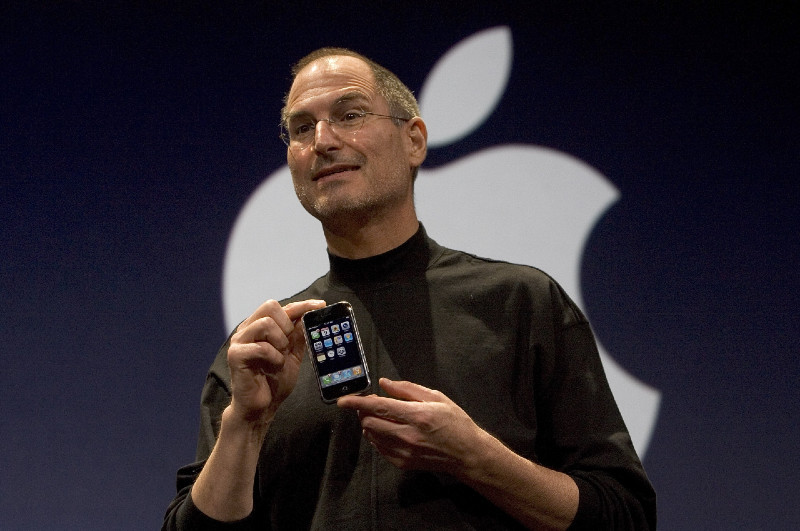

Steven Paul Jobs
The man who thought different

Steve Jobs with the first ever iphone
- 1955 - Born in San Francisco to Carole Schieble, later adopted to Paul and Clara Jobs
- 1972 - Enrolled at Reed College in Portland, Oregon
- 1972 - Dropped out of Reed College after just one semester, however continued to audit his clases such as calligraphy
- 1974 - hired by Atari, Inc. in Los Gatos, California as a technician
- 1975 - worked together with Wozniak to create a circuit board for Atari
- 1976 - With high school buddy Steve Wozniak, Jobs founded Apple Computer company. Their first prodcut, Apple I, built in circuit board form, debuts aat the homebrew Computer Club in Palo Alto, Calif
- 1976 - With high school buddy Steve Wozniak, Jobs founded Apple Computer company. Their first prodcut, Apple I, built in circuit board form, debuts aat the homebrew Computer Club in Palo Alto, Calif
- 1977 - Apple II is unveiled, the first personal comptuer in a plastic case with color graphics
- 1983 - Apple starts selling the "Lisa", a desktop computer for businesses with a graphical user interface, the system most users are familiar today
- 11984 - Apple debuts the Macintosh personal computer
- 1986 - Founds computer company NEXT Inc and cofounds Pixar Animation Studios with Ed Catmull
- 1996 - Apple announces it will buy NEXT for US$400 million and Jobs will act as part time product strategy advirsot to Apple CEO Amelio
- 1997- After losses totalling US$ 1.5 billion over six quarters, Amelio resigns as CEO and Jobs steps into the role
- 2000- becomes permanent chief executive of Apple and company market cap went from less than US$ 2 billion to more than US$ 16 billion. His salary remains US$1 a year.
- 2000 - Apple launches next generation operating system Mac OS X.
- 2001 - Debuts Ipod
- 2007 - Announce the first ever iphone.
- 2009 - Fortune Magazine names Jobs CEO of the Decade
- 2010 - Launches ipad and acheived 84 percent market share of the tablet market by year's end and outsells Mac personal computers within a year of its release
- 2011 - Steps down as Apple CEO
- 2011 - Steve Jobs passed away
"“And, there’s no chance in hell it happens without him. I mean, Apple was on its way to die. No one else can do what he did there. I couldn’t have done that [and] I don’t know anyone who could have.”
-- Bill Gates